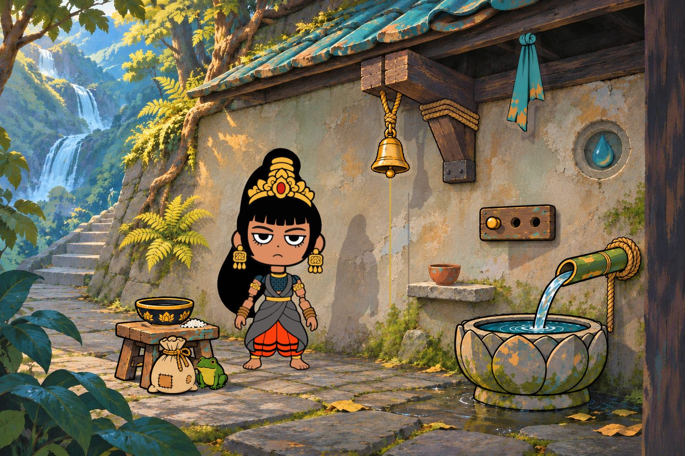

Loading the shrine
The browser took the picture away. It usually gives it back.
Loading the shrine
The browser took the picture away. It usually gives it back.

The room is a live picture, and she needs it to answer you. This is what she would have said.